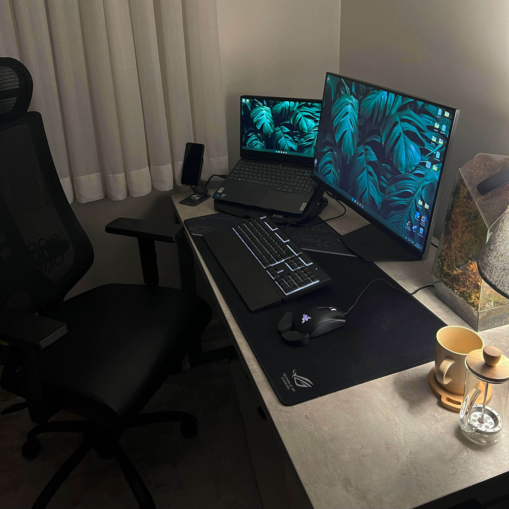

        <section id="remoteid" class="remote site-section section-form text-center">
            <div class="container">

                <h3>Remote work</h3>
                

                <div class="parent">
                    <div></div>
                    <div class="remote text">When I first switched to remote work at Webnus, it was definitely a big change.
                        <br><br>Communicating with team members across different time zones and <b>without face-to-face interactions felt challenging at first</b> . I had to adapt quickly to new tools and find ways to make collaboration as seamless as possible. <br><br>Scheduling meetings, keeping track of progress, and building a sense of teamwork required more effort, but tools like Slack, Zoom, and Trello really helped.
                        <br> <br>Over time, I developed a system for staying organized and making sure communication flowed smoothly, no matter where my colleagues were located. <br><br> By the time I started working remotely at Automattic, I had already mastered the art of remote collaboration and felt confident in managing tasks and staying connected.</div>
                </div>

                <div class="parent"></div>

                    <div class="remote2">Despite the early challenges, I’ve found that working remotely suits me perfectly. I enjoy the flexibility it offers, and I’ve set up a quiet, comfortable workspace where I can concentrate without interruptions. <br> <br> While I miss the casual in-person chats with colleagues, <b> I’ve learned how to keep communication open and meaningful</b>, whether it's through daily stand-ups or quick catch-ups. Having my own space has boosted my productivity, and I’ve grown to love the independence and focus that remote work provides. It’s a balance that works really well for me.</div>
                        <div></div>
                
                    </div>

            </div>
        </section><!-- /.section-form -->